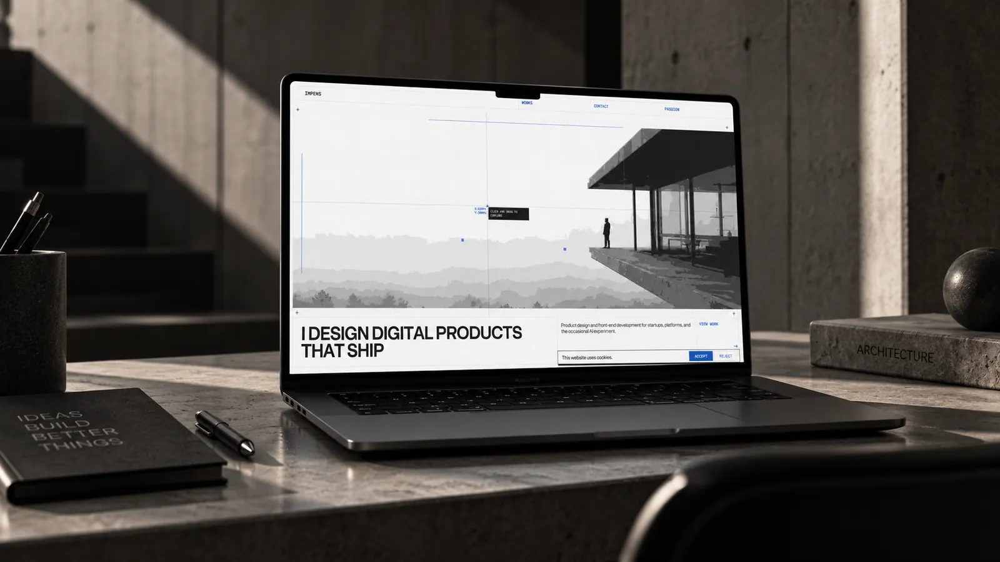
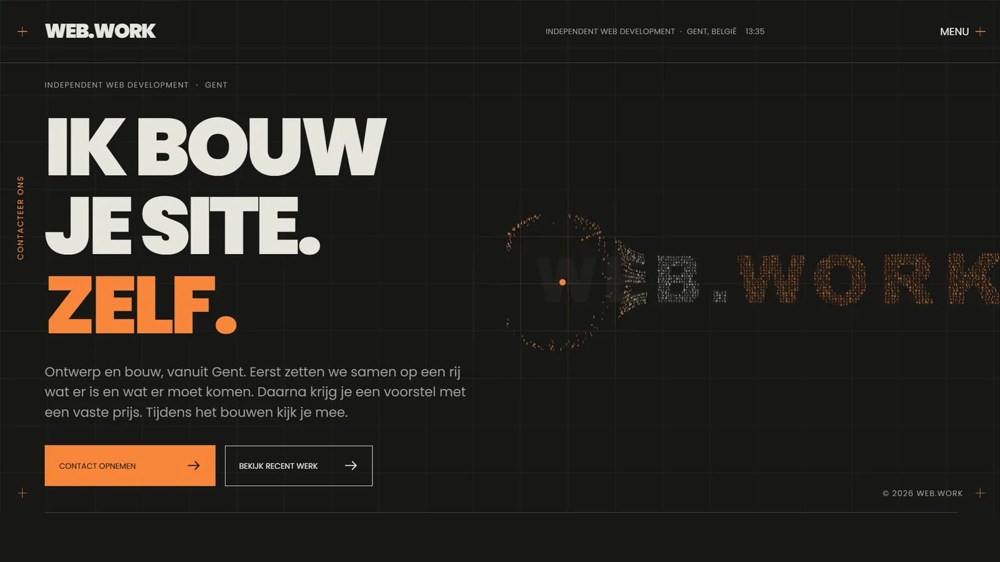

2X8 zelf
Een aanvraag op onze site wordt een offerte, komt in Notion, wacht op akkoord en wordt een factuur. Niemand typt iets over.
Automatisatie Eigen projectWerk
Sites die klanten binnenhalen en tools die werk wegnemen. Voor klanten, en een paar voor onszelf, omdat we graag tonen hoe we bouwen als niemand anders de briefing schrijft.
Een aanvraag op onze site wordt een offerte, komt in Notion, wacht op akkoord en wordt een factuur. Niemand typt iets over.
Automatisatie Eigen project
Een galerie die reist, met één vaste plek online: wat er nu te zien is en welke werken te koop zijn.
Website

Een prototype voor psychologen: sessies, logboek, opdrachten en facturen op één plek. Het uur gaat naar het gesprek.
Platform Eigen project
Eén pagina. Na één scroll weet je bij wie je terechtkomt en hoe je een afspraak maakt.
Onepager

Een architectenbureau dat wegneemt tot enkel het nodige overblijft. De site doet hetzelfde.
Website
Een live dashboard dat toont welke aandelen het diepst gevallen zijn. Rustig, zonder tickerchaos.
Dashboard Eigen project
Een tracker die elke aankoop apart bijhoudt en live je winst en verlies berekent. Zonder account.
Dashboard Eigen project
Een app die beleggen leert als een proces: korte lessen en vragen die bepalen wat je daarna ziet.
App Eigen project
Het portfolio van Jasper. Hetzelfde niveau van afwerking, zonder briefing van iemand anders.
Portfolio Eigen project
De site van Florian: diensten met een prijs erbij, werk met de live link ernaast, vragen meteen beantwoord.
Website Eigen projectContact
Plan een gesprek van een half uur. Je krijgt antwoord binnen twee werkdagen.